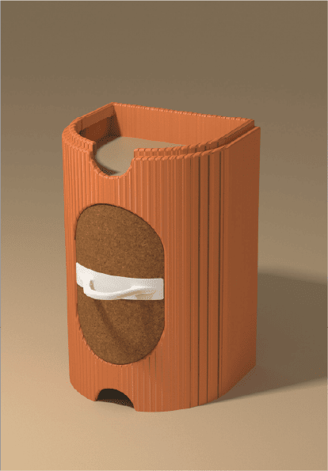

Hola! Soy Alejandra Larri
Diseñadora de producto.

Sobre mí
Soy Alejandra Larrinaga, estudiante de cuarto de Diseño de Producto en UDIT. Me apasiona entender cómo las personas se relacionan con los objetos y transformar esa intuición en soluciones funcionales, estéticas y con intención. Me considero una persona curiosa, resolutiva y muy detallista, siempre en busca de nuevas técnicas, materiales y formas de construir.
Me motiva trabajar con conceptos potentes y llevarlos a resultados tangibles, desde la exploración visual hasta el prototipo. Disfruto especialmente de los procesos manuales y del trabajo en fablab, donde puedo experimentar, fallar rápido y volver a empezar hasta encontrar algo que realmente funcione. Además, me gusta enfocar mis proyectos desde perspectivas críticas y personales, creando piezas con narrativa propia.
Proyectos

Camp & Grill

Tabhaus

Tower Fridge
Contacto
Correo: sandrulilarrinaga@gmail.com
Linkedin: Alejandra larrinaga Morales
Instagram: @san.larri
Num: +34 633 70 32 15